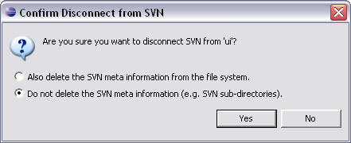

This command is initiated via the context menu option.
If you want to work completely independent of version control, you may disconnect your local copy of the project from the repository. You can only disconnect entire projects, not individual folders or files.

Select the project root folder and select from the context menu.
A dialog is presented asking if you want to remove the SVN meta information from the file system. If you want to reconnect to the remote repository at a later time, choose Do not delete the SVN meta information. This is the default option.
If you do choose to delete the SVN meta information, your project will be completely disconnected from SVN. You will not be able to re-attach your project to the same repository location later. If you think you might want to do that, then you should NOT delete the SVN meta information.
Related Tasks
Importing a new project into a SVN repository
Connecting to an existing project
Related Reference
None